Here a situation that may have occurred to some of you: your R script (a model analysing a big dataset, a simulation where you test many parameter combinations) needs hours to run. If you are lucky, you may have access to a cluster, or a remote computer, where you can run your script. All sorted. Sometimes - as it happens to me now, running this individual-based model - you do not have this option. However, I just found out that launching your RStudio script on Amazon Web Service (AWS) is quite easy (and it is free).
As the information needed is scattered on the web, I put together a short tutorial. If you do not trust me, most material comes from here, but it is not explained step-by-step, some information are possibly not relevant for a non-expert (as myself) and, mostly, the AWS interface has been changed from when the page was written. So, follow this short instructions, and you can close your laptop and have your script running for you somewhere else!
Step-by-step tutorial
(1) Create an AWS account
First of all, we need an AWS account. Amazon Web Service “provides on-demand cloud computing platforms to individuals, companies, and governments, on a metered pay-as-you-go basis”. However, some products - including the one we will use - are free. Let’s go to the AWS webpage and create the account. It asks us some personal data, including the address and, annoyingly, a credit card number, in case we use products that are not free, or exceed the usage limits. (In any case, Amazon probably already knows our credit card number.)
(2) Launch the AMI
Now we want to run our script in the Amazon cloud. Ideally, we would like to run it on a (virtual) computer with RStudio installed. Luckily, someone already did this. Go to this webpage and choose one of the AMI on the right of the page, according to the geographic location (in my case: EU West, London).
Here is the Wikipedia page about AMI (Amazon Machine Image) if you want to know more, but you do not need to.
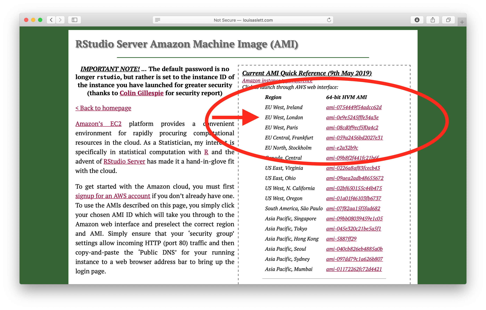
(3) Choose the instance
Now we landed on the AWS page of the AMI we choose. The “Free Tier” instance is already selected, so we do not have to do anything.
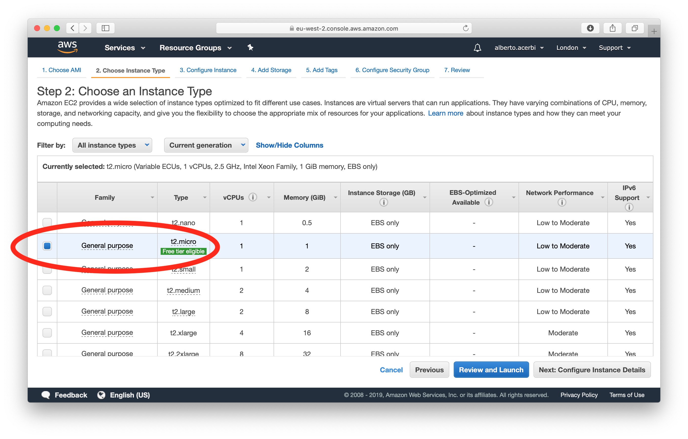
(4) Configure the security
To access to Rstudio in the cloud with our browser we need to configure the security in the right way. Thus, before launching the instance, we need to go on the tab 6 (“Configure Security Group”), and select “HTTP” from the drop-down menu.
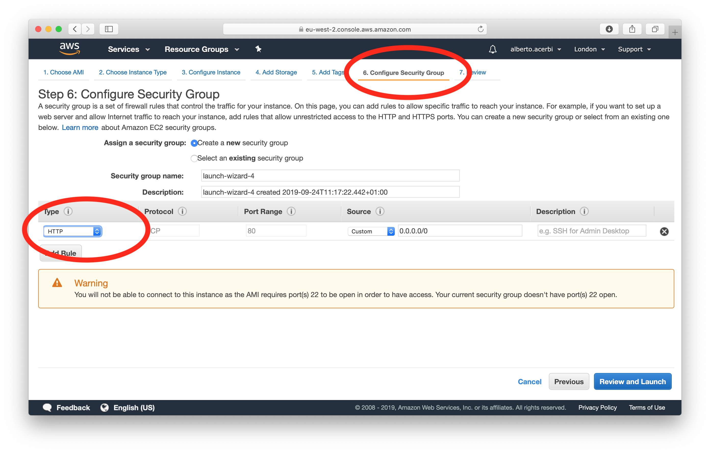
(5) Review and launch
We click on “Review and Launch” and we land on this page. Check that the “AMI details” are correct and then click “Launch”.
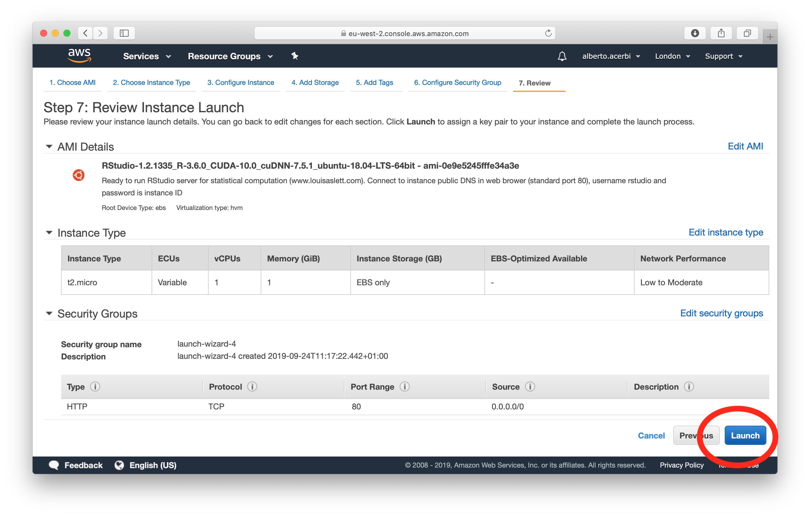
(6) Select the key pair
Before launching the instance, we are asked to select a key pair. From the drop-down menu we choose “Proceed without a key pair”, and check the box below. Now we can click “Launch Instances”.
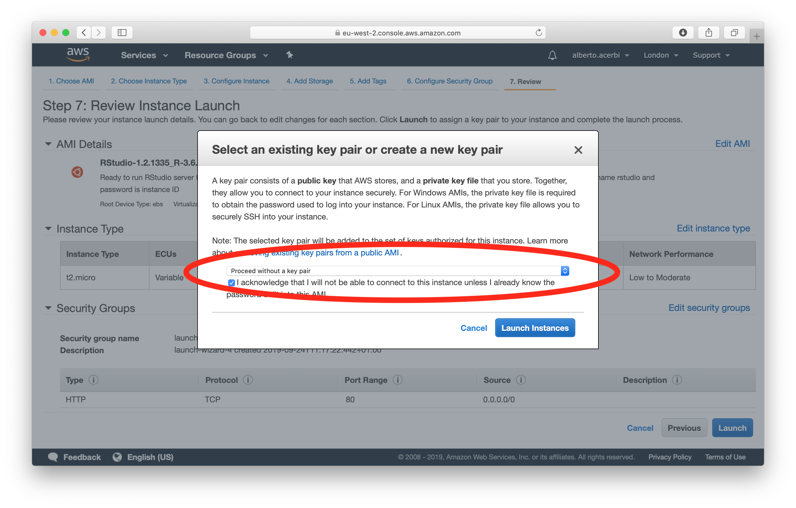
(7) The instance is launched!
All good. Click on the ID of the instance (it will be different from the one shown here), to access it.
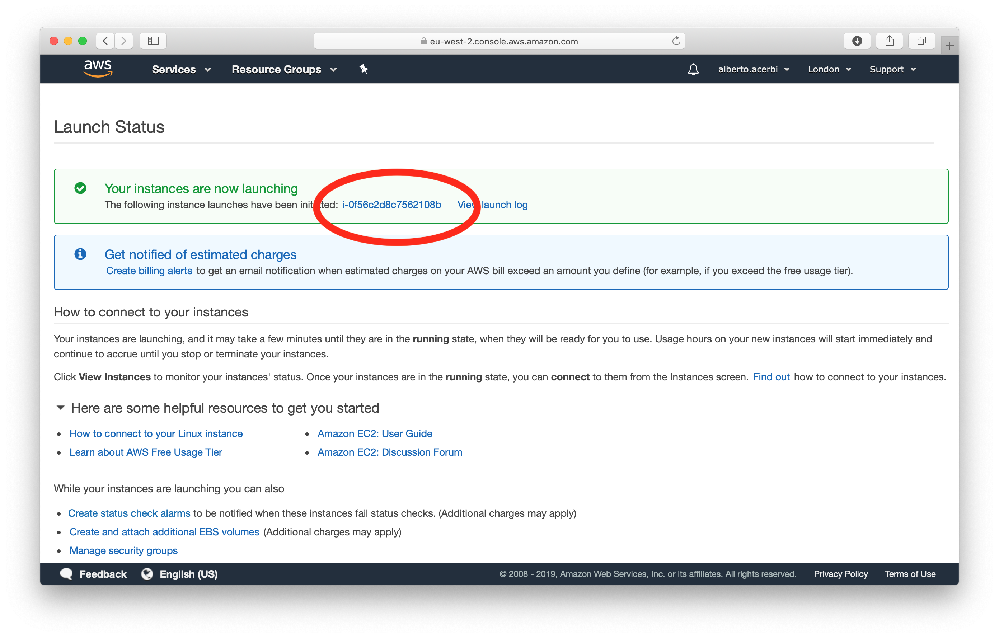
(8) Connecting to RStudio
Here is the console of our instance. After some time, the “Instance State” will be on “running”. We need to copy the Public DNS, and paste it in the address bar of another page our browser to access our instance of RStudio.
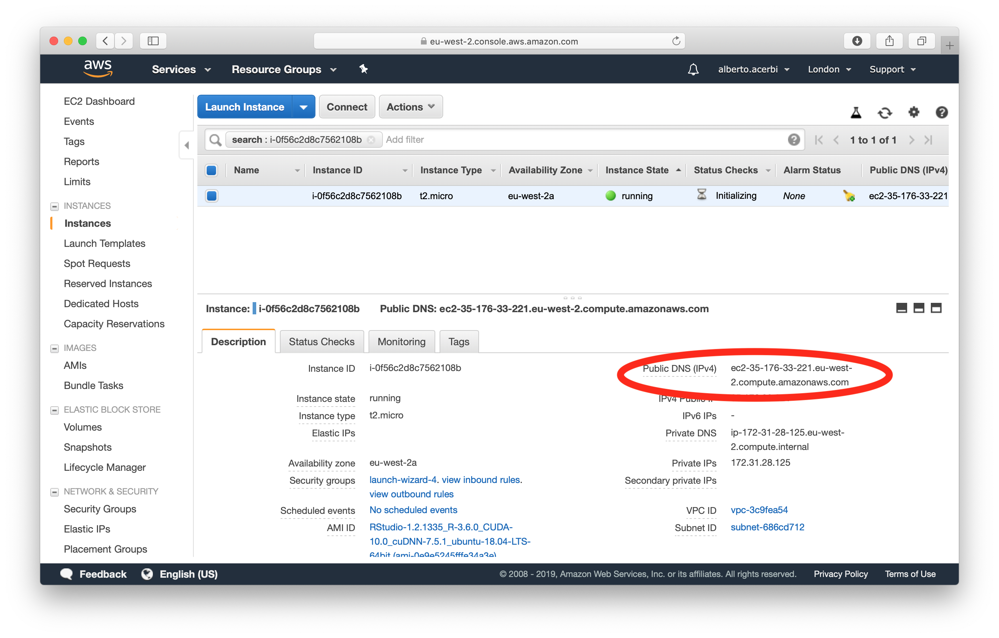
(9) Starting RStudio
After a while this page should appear (if not, we need to wait a bit an retry, it may need a few minutes). The username is “rstudio”, and the password is our “Instance ID” (see the previous screenshot, on the left side of the Public DNS).
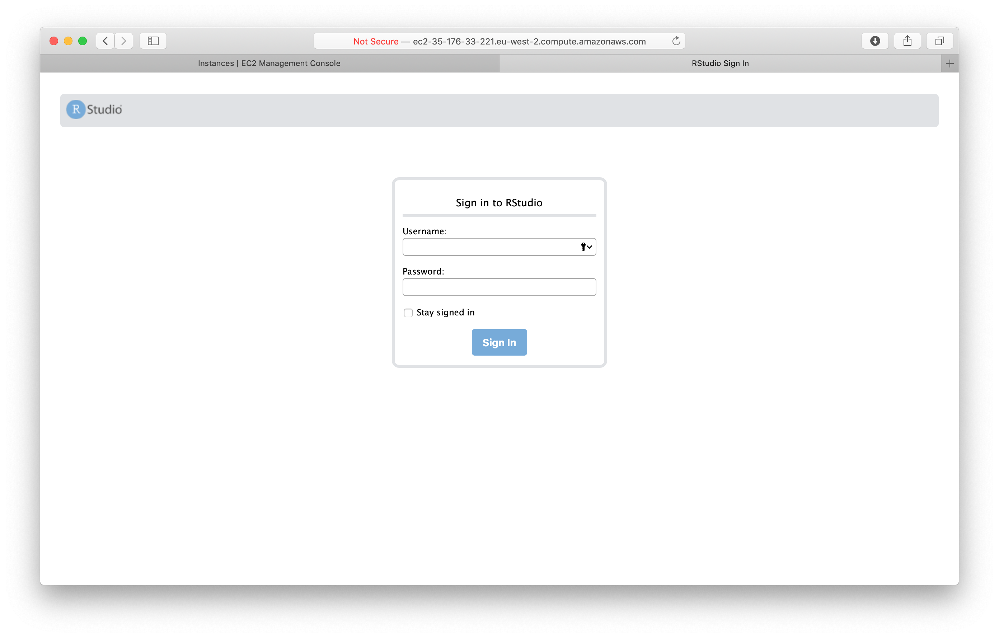
(10) Virtual RStudio
If all went well, we should see the familiar screen below. There is a Welcome.R script. There are two things we should do (which are well explained in the script). First, it is advisable to change our password, from the “Instance ID” to something else of our choice. To do this, we first load the package included (library("RStudioAMI")), and use the function passwd(), which asks for old and new password. The second thing is that we can link our Dropbox so that we can load directly our script, using the function linkDropbox().
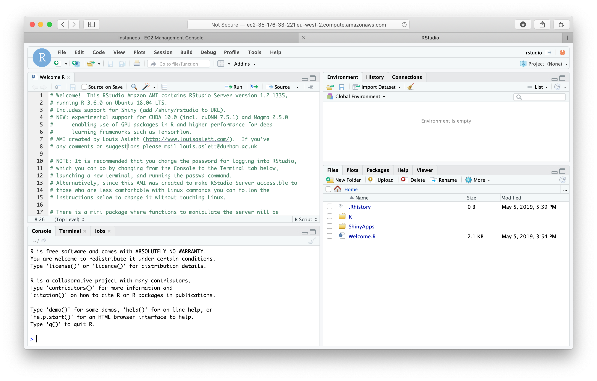
(11) Authorising Dropbox
After few seconds, a message on the RStudio console (“Please visit the following URL in your browser now to link the server to your Dropbox account:") will prompt us to authorise the cloud computer to connect to our Dropbox, landing on this page. We need to click on “Connect”. (We will also receive a mail from Dropbox asking to confirm.)
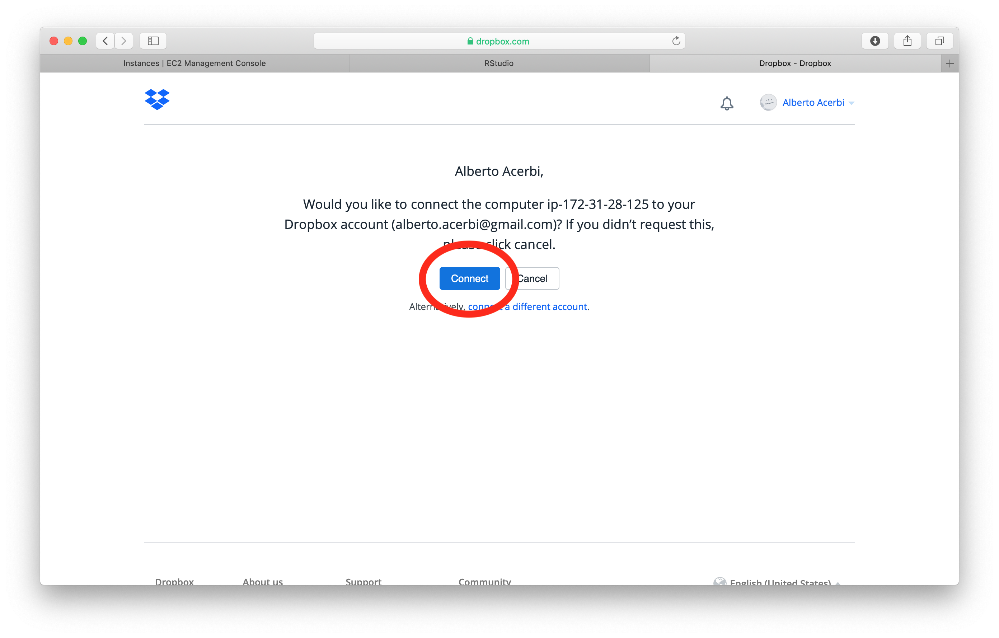
(12) Excluding folders from Dropbox sync
At this point, a “Dropbox” folder appears in the “Files” tab of RStudio. We do not want to sync all our Dropbox folder in the cloud. When our Dropbox folders start to appear in RStudio, we can use the function excludeSyncDropbox("*") to exclude all files to be synced.
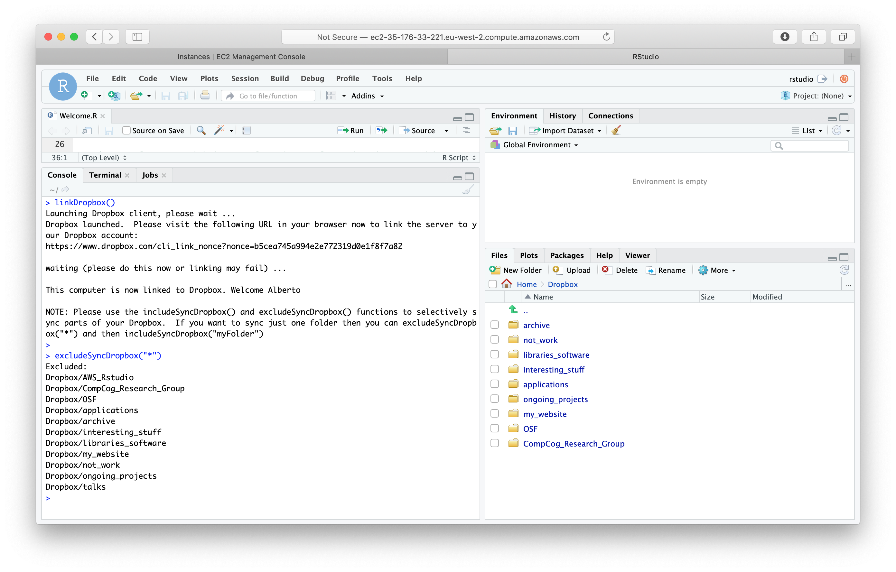
(13) Syncing what we need
Imagine the script we need to run is called scriptThatRunsForHours.R. A good idea is to create a folder in our dropbox - let’s call it “AWS_RStudio” and put the script in that folder. Now we can ask to synchronise only this folder, using the function includeSyncDropbox("AWS_RStudio"). Now we can open our script as we would do in our local RStudio and do whatever we need to do with it, including running it.
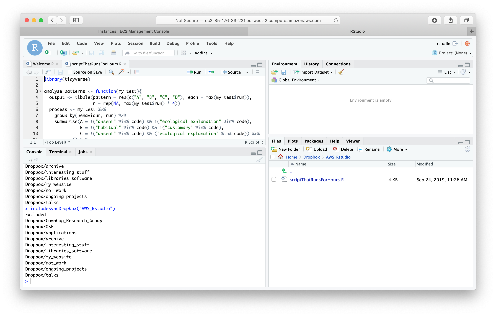
(14) Going back the script
When the script runs, we can close our browser, and just forget about it. To go back to our instance, we go again on the AWS webpage, we login to our account, and we click the EC2 service.
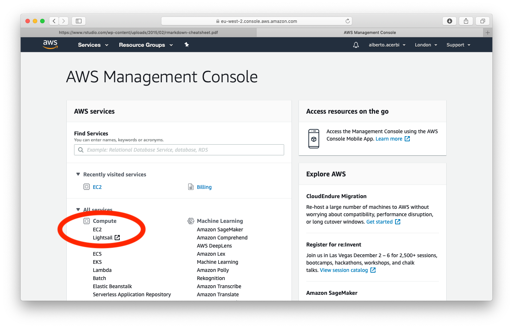
We should have one instance running. Clicking on it, we are back to the instance console (see point 8), from where, following again points 8 and 9, we go again on our virtual RStudio.
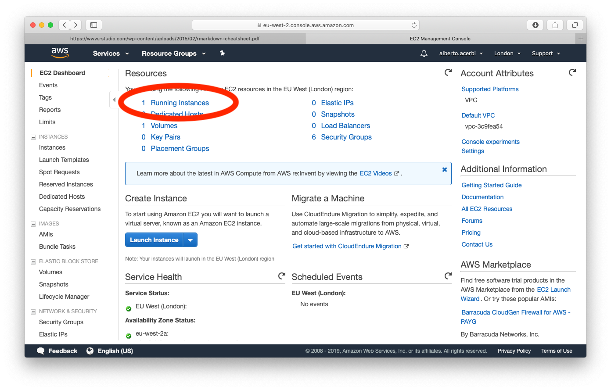
(15) Terminate the instance
When the script is finished, and if we do not have anything else to run, from the instance console we can “terminate” the instance, as shown below. All done!
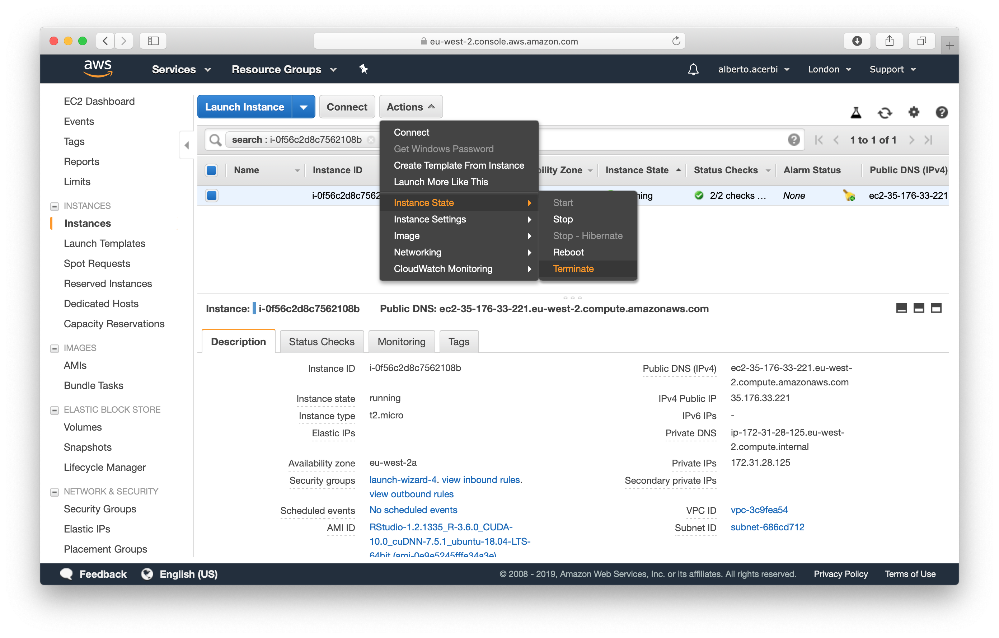
Limitations
This quick tutorial is intended as a very basic shortcut to run RStudio on AWS. The pros are that it works, that it should have you run a R script in a handful of minutes and that it does not require any technical knowledge. On the other hand, there are some obvious limitations (all suggestions are more than welcome!):
-
I have not been able to write output files on my local computer. While the modifications of the scripts I made in the instance are saved on my Dropbox, the output files, produced with
write_csv("myLongScriptOutput.csv")are not. They appear in the “Files” tab in the virtual RStudio and I manually export them from there to my computer (“More>Export”). This is not very elegant. -
The virtual RStudio comes with some packages pre-installed. In particular, the “tidyverse” package, which is the only one I needed, is there. I did not try to install any other package, so I do not know whether this will work straightforwardly or not.
-
The most annoying aspect is that my script runs slower in the cloud that on my laptop! (Around twice slower.) This is probably due to the fact that I am using a “Free Tier” instance, so I would need to pay for more computational power. So, this is a viable option if you are not exactly in a rush, unless someone finds a solution to this.
-
Finally, I just scratched the surface of what one can do (again the goal was to provide a fast and easy solution). I do not have idea of how the majority of the options present in the instance console work, and I did not mention few for which I have some idea. (For example, how to monitor your script, or how to pair your instance with a ssh key so to access it directly from terminal, see point 6).
As usual, comments and feedback welcome, and happy to know about better solutions!